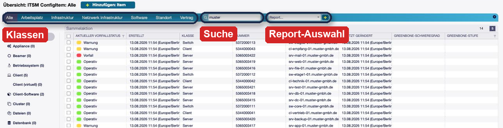
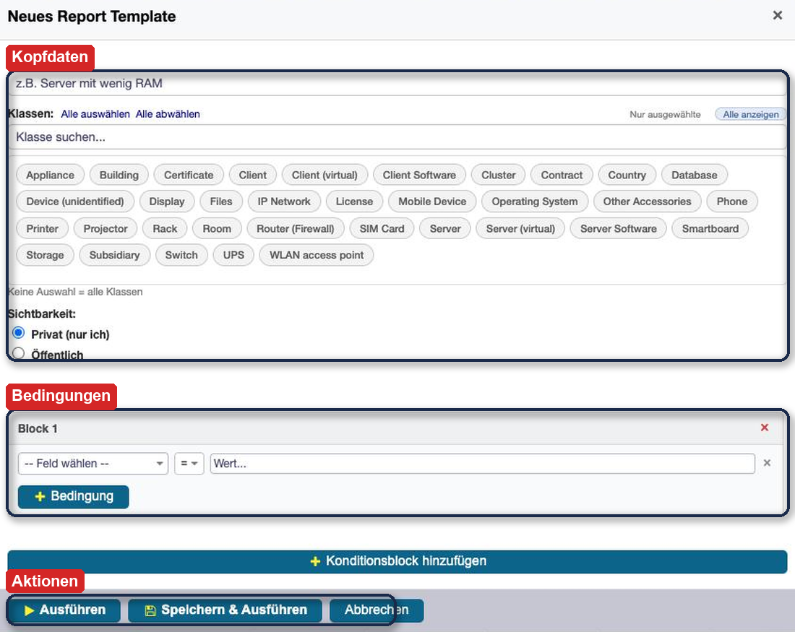
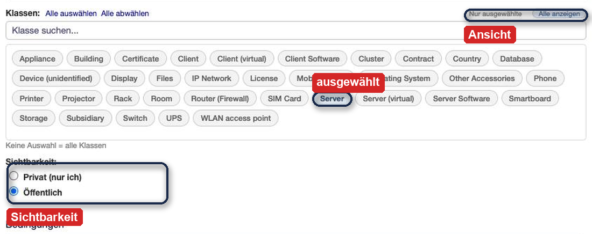
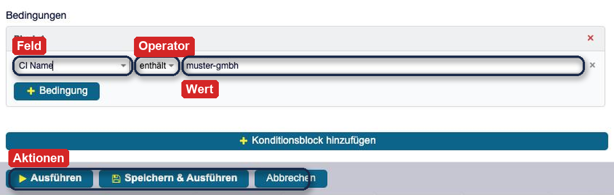
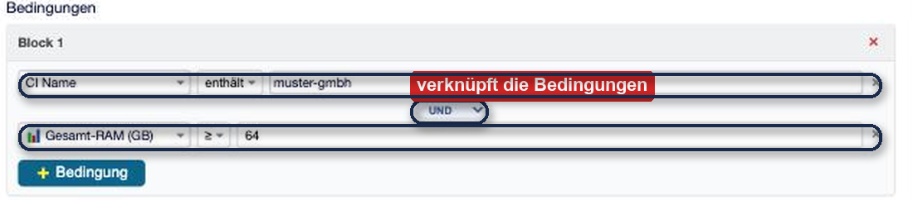
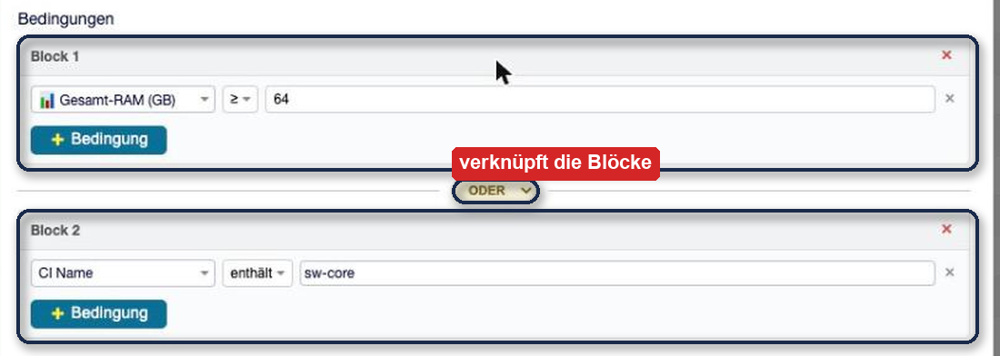
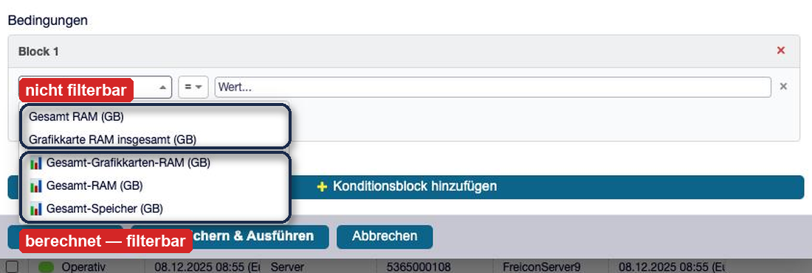
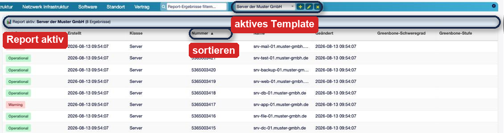
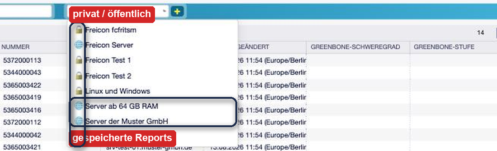

OTOBO ConfigItem Report¶
Beschreibung¶
Wer eine CMDB pflegt, tut das nicht um der Ordnung willen, sondern um Fragen beantworten zu können: Welche Server haben weniger als 32 GB RAM? Welche Clients stehen noch auf einem alten Betriebssystem? Was steht am Standort Karlsruhe im Rack? Die Standardsuche von OTOBO beantwortet solche Fragen nur mit Mühe — sie sucht in einer Klasse, mit festen Feldern, und das Ergebnis ist nach dem nächsten Klick wieder verloren.
ConfigItem Report bringt einen Report-Editor direkt in die CMDB-Übersicht. Kein eigener Menüpunkt, keine zweite Oberfläche: Die Bedienelemente sitzen in der gewohnten Werkzeugleiste über der CI-Liste. Ein Agent stellt seine Frage einmal als Bedingung zusammen, speichert sie als Template und ruft sie danach mit einem Klick wieder auf. Öffentliche Templates stehen dem ganzen Team zur Verfügung — so entsteht mit der Zeit eine Bibliothek von Standardauswertungen, die jeder ausführen kann, ohne sie zu verstehen.
Das Addon ist an den Report-Manager aus i-doit angelehnt und richtet sich an Organisationen, die von dort auf die OTOBO-CMDB wechseln.
🔍 Klassenübergreifende Abfragen — ein Report über Server und Clients gleichzeitig
🧩 Bedingungsblöcke — Regeln frei mit UND/ODER verknüpfen, Blöcke wirken wie Klammern
📊 Berechnete Felder — Gesamt-RAM, Grafikspeicher und Gesamtspeicher filtern, obwohl sie nirgends gespeichert sind
🔗 Referenzfelder im Klartext — nach dem Namen des verknüpften CIs suchen statt nach seiner ID
📋 Templates — speichern, wiederverwenden, privat halten oder für alle freigeben
🎯 Eigene Ergebnistabelle — sortierbar, mit Sofortfilter über alle sichtbaren Spalten
🔒 Berechtigungen bleiben gültig — jeder Report zeigt nur CIs, die der Agent auch sehen darf
Einsatzszenarien¶
Hardware-Lebenszyklus — „Alle Server mit weniger als 32 GB RAM“ als Grundlage für die Aufrüstungsplanung; einmal als Template hinterlegt, jederzeit aktuell abrufbar.
Migrationsvorbereitung — „Alle Clients mit Betriebssystem Windows 10“, um den Umfang eines Rollouts zu beziffern.
Standortinventur — „Alles am Standort Karlsruhe, Klasse Server und Switch“, als Vorbereitung für einen Umzug oder eine Begehung.
Wartungsfenster — „Alle CIs im Status Wartung“, damit im Betriebsmeeting niemand raten muss.
Datenqualität — „Server ohne Seriennummer“ macht Lücken in der CMDB sichtbar, statt sie zu vermuten.
Wiederkehrende Berichte — der Consultant hinterlegt beim Kunden fünf öffentliche Templates; das Team arbeitet damit, ohne selbst Bedingungen bauen zu müssen.
Systemvoraussetzungen¶
Framework¶
OTOBO 11.0.x
Pakete¶
ITSMConfigurationManagement(11.0.x) — die CMDB selbstFreiconCMDBCustomizing(ab 11.0.3) — liefert die Werkzeugleiste der CI-Übersicht, in die sich der Report einfügt
Software von Drittanbietern¶
-
Überblick¶
Admin-Handbuch — Installation, Einstellungen, Berechtigungen, An- und Abschalten
Anwender-Handbuch — Report bauen, ausführen, auswerten, als Template teilen
Referenz — Operatoren, berechnete Felder, Spaltenreihenfolge, Grenzen
Installation¶
Das Addon wird als OPM-Paket über die Paketverwaltung installiert:
Admin → Paketverwaltung aufrufen.
Die Datei
ITSMConfigItemReport-11.0.x.opmhochladen und Paket installieren wählen.
Alternativ auf der Konsole:
/opt/otobo/bin/otobo.Console.pl Admin::Package::Install /pfad/zu/ITSMConfigItemReport-11.0.5.opm
Die Installation legt die Tabelle configitem_report_template an, in der die gespeicherten Reports liegen. Weitere Einrichtungsschritte sind nicht nötig — nach dem Neuladen der CMDB-Übersicht ist die Report-Auswahl vorhanden.
Bemerkung
Die beiden vorausgesetzten Pakete müssen vor diesem Addon installiert sein. Fehlt FreiconCMDBCustomizing, erscheinen die Bedienelemente zwar, das Suchfeld für die Ergebnisse fehlt jedoch (siehe Zusammenspiel mit dem Suchfeld).
Konfiguration¶
Das Addon kommt mit drei Einstellungen aus. Alle liegen in der Systemkonfiguration unter Admin → Systemkonfiguration.
ITSMConfigItemReport::MaxResultsStandard: 10000 — Obergrenze der Treffer je Report und CI-Klasse. Schützt Server und Browser vor Auswertungen, die versehentlich die halbe CMDB laden.
Frontend::Module###AgentITSMConfigItemReportAJAXStandard: gültig — Registrierung des Moduls, das Templates lädt, speichert und Reports ausführt. Ohne diese Registrierung bleibt die Oberfläche ohne Funktion.
Loader::Module::AgentITSMConfigItem###ITSMConfigItemReportStandard: gültig — lädt JavaScript und CSS in die CMDB-Übersicht. Hierüber wird die Report-Funktion sichtbar bzw. unsichtbar.
Admin-Handbuch¶
Wo der Report sitzt¶
Die Report-Funktion hat keinen eigenen Menüpunkt. Sie erscheint in der Werkzeugleiste der CMDB-Übersicht, erreichbar über CMDB → Übersicht in der Navigationsleiste.
{kind=link}

Abb. 1 Die Werkzeugleiste der CMDB-Übersicht: Klassenreiter, Suchfeld und Report-Auswahl¶
Die Leiste enthält von links nach rechts:
die Klassenreiter (Alle, Arbeitsplatz, Infrastruktur …) aus dem ITSM-Standard,
das Suchfeld aus
FreiconCMDBCustomizing,die Report-Auswahl mit den Knöpfen + (neues Template), ✏️ (Template bearbeiten) und ✖️ (Report zurücksetzen).
Bearbeiten und Zurücksetzen erscheinen erst, sobald ein Report aktiv ist.
Berechtigungen¶
Das Addon bringt keine eigene Gruppe mit. Es gelten die Berechtigungen, die ohnehin für die CMDB vergeben sind:
Wer die CMDB-Übersicht sehen darf, sieht auch die Report-Auswahl.
Ein Report liefert ausschließlich CIs aus Klassen, für die der Agent Leserecht hat. Ein Report über alle Klassen liefert bei zwei Agenten mit unterschiedlichen Rechten also unterschiedlich viele Zeilen — das ist beabsichtigt und keine Fehlfunktion.
Warnung
Die Sichtbarkeit privat/öffentlich steuert, welche Templates in der Auswahlliste erscheinen. Sie ist keine Zugriffssperre: Ein Agent, der die technische ID eines fremden privaten Templates kennt, kann es laden. Vertrauliches gehört deshalb nicht in den Namen eines Templates.
Ergebnisgrenze festlegen¶
ITSMConfigItemReport::MaxResults begrenzt, wie viele CIs ein Report je Klasse zurückgibt. Der Standard von 10.000 ist für die meisten Installationen großzügig bemessen. Zu beachten ist:
Die Grenze greift je Klasse, nicht je Report. Ein Report über fünf Klassen kann im Extremfall das Fünffache liefern.
Wird die Grenze erreicht, gibt es keine Warnung in der Oberfläche — das Ergebnis ist dann stillschweigend unvollständig. Bei sehr großen CMDBs empfiehlt es sich, die Agenten auf enger gefasste Bedingungen hinzuweisen, statt die Grenze anzuheben.
Zusammenspiel mit dem Suchfeld¶
Das Suchfeld links neben der Report-Auswahl gehört nicht zu diesem Addon, sondern zu FreiconCMDBCustomizing. Beide arbeiten zusammen:
Ohne aktiven Report sucht das Feld wie gewohnt über den Server nach Name, Kunde und Kontakt.
Mit aktivem Report übernimmt der Report das Feld: Der Platzhaltertext wechselt zu „Report-Ergebnisse filtern…“, und die Eingabe filtert die geladenen Ergebnisse direkt im Browser über alle sichtbaren Spalten.
Fehlt FreiconCMDBCustomizing, funktioniert der Report weiterhin — nur ohne dieses Filterfeld.
Report abschalten¶
Beide Funktionen lassen sich unabhängig voneinander abschalten. Für den Report genügt eine Einstellung:
Admin → Systemkonfiguration öffnen und nach
Loader::Module::AgentITSMConfigItem###ITSMConfigItemReportsuchen.Die Einstellung auf ungültig setzen und die Änderung aktivieren.
Damit werden JavaScript und CSS nicht mehr geladen; Auswahlliste und Knöpfe verschwinden, die Suche bleibt vollständig erhalten. Wer zusätzlich die Schnittstelle schließen möchte, setzt auch Frontend::Module###AgentITSMConfigItemReportAJAX auf ungültig. Gespeicherte Templates bleiben in beiden Fällen erhalten und stehen nach dem Wiedereinschalten unverändert zur Verfügung.
Bemerkung
Umgekehrt gilt das nicht spiegelbildlich: Die Einstellung Loader::Module::AgentITSMConfigItem###FreiconCMDBCustomizing lädt neben dem Suchfeld auch die verstellbaren Spaltenbreiten der CI-Liste. Wer nur die Suche abschalten will, entfernt aus dieser Liste gezielt die Datei Filter/AgentITSMConfigItem/Core.Agent.FreiconCMDBCustomizing.ConfigItemFilter.js, statt die ganze Einstellung ungültig zu setzen.
Anwender-Handbuch¶
Die Oberfläche im Überblick¶
Alles spielt sich in der CMDB-Übersicht ab. Solange kein Report läuft, sieht die Seite aus wie immer.
Abb. 2 Ohne aktiven Report zeigt die Leiste nur den Knopf für ein neues Template¶
Schritt 1 — Neues Template anlegen¶
Ein Klick auf + öffnet den Report-Editor. Er besteht aus drei Bereichen: Kopfdaten, Bedingungen und Aktionsknöpfe.
{kind=link}

Abb. 3 Der Report-Editor: Kopfdaten, Bedingungen, Aktionen¶
Name — vergeben Sie eine sprechende Bezeichnung, etwa „Server unter 32 GB RAM“. Unter diesem Namen erscheint der Report später in der Auswahlliste; er ist für Kollegen oft die einzige Erklärung, was der Report tut.
Klassen — wählen Sie die CI-Klassen aus, die durchsucht werden sollen. Ausgewählte Klassen erscheinen als blaue Kacheln. Über Alle auswählen und Alle abwählen geht es schneller, das Suchfeld darüber grenzt lange Klassenlisten ein, und Nur ausgewählte / Alle anzeigen schaltet zwischen beiden Ansichten um.
{kind=link}

Abb. 4 Ausgewählte Klassen erscheinen als blaue Kachel; darunter die Sichtbarkeit¶
Bemerkung
Keine Auswahl bedeutet alle Klassen. Das ist bequem, aber langsam — bei einer großen CMDB lohnt es sich, die Klassen einzugrenzen.
Sichtbarkeit — Privat hält den Report in Ihrer eigenen Auswahlliste, Öffentlich stellt ihn allen Agenten zur Verfügung. In der Liste sind beide an einem Symbol zu erkennen: 🔒 für privat, 🌐 für öffentlich.
Schritt 2 — Bedingungen zusammenstellen¶
Eine Bedingung besteht immer aus Feld, Operator und Wert.
{kind=link}

Abb. 5 Eine Bedingung besteht aus Feld, Operator und Wert¶
Die Feldauswahl enthält die Standardfelder (Name, Nummer, Verwendungsstatus, Vorfallstatus) und alle Felder der ausgewählten Klassen, alphabetisch sortiert und in der Sprache der Oberfläche beschriftet. Welche Operatoren sinnvoll sind, hängt vom Feld ab — die vollständige Liste steht unter Referenz.
Mehrere Bedingungen — mit + Bedingung kommt eine weitere Zeile hinzu. Zwischen zwei Zeilen steht ein Schalter UND/ODER, der beide verknüpft. UND heißt: beide müssen zutreffen. ODER heißt: eine von beiden genügt.
{kind=link}

Abb. 6 Innerhalb eines Blocks verknüpft der Schalter zwei Bedingungen¶
Mehrere Blöcke — ein Block wirkt wie eine Klammer. Über + Konditionsblock hinzufügen entsteht ein zweiter Block; auch zwischen Blöcken steht ein UND/ODER-Schalter. So lässt sich formulieren, was mit einer flachen Liste von Bedingungen nicht ginge:
( Gesamt-RAM ≥ 64 )
ODER
( CI Name enthält "sw-core" )
Gelesen: alle gut bestückten Maschinen — und zusätzlich die Core-Switches, ganz gleich, wie viel Speicher für sie hinterlegt ist.
Bemerkung
Die Klassen gehören nicht in die Bedingungen; sie werden einmal oben im Editor für den ganzen Report ausgewählt. Ein Block enthält ausschließlich Feldbedingungen.
{kind=link}

Abb. 7 Zwei Blöcke, verknüpft mit ODER — jeder Block wirkt wie eine Klammer¶
Berechnete Felder¶
Manche Werte stehen nirgends in der Datenbank, weil OTOBO sie erst beim Anzeigen ausrechnet — der Gesamt-RAM etwa ergibt sich aus Anzahl der Module × Kapazität. Genau solche Werte lassen sich mit den berechneten Feldern trotzdem filtern. Sie sind in der Feldauswahl an einem 📊 zu erkennen:
📊 Gesamt-RAM (GB)
📊 Gesamt-Grafikkarten-RAM (GB)
📊 Gesamt-Speicher (GB)
Sie vertragen die numerischen Operatoren = != < > ≤ ≥. Unterschiedliche Einheiten in den Quelldaten sind kein Problem: „2TB“, „2048 GB“ und „2048“ ergeben denselben Wert, das Addon rechnet alles in Gigabyte um.
Warnung
Fehlende Angaben zählen als 0. Ein CI, für das kein Arbeitsspeicher hinterlegt ist — ein Switch etwa, oder ein unvollständig gepflegter Server —, geht mit dem Wert 0 in die Rechnung ein. Die Bedingung Gesamt-RAM < 32 findet deshalb nicht nur knapp bestückte Maschinen, sondern auch alles ohne RAM-Angabe. Für „klein ausgestattet“ grenzen Sie die Klassen ein oder kombinieren die Bedingung mit einer zweiten; für „gut ausgestattet“ ist ≥ unproblematisch.
Bemerkung
In der Feldauswahl stehen zwei ähnlich benannte Einträge: Gesamt RAM (GB) ohne Symbol und 📊 Gesamt-RAM (GB) mit Symbol. Der obere ist das Anzeigefeld der CMDB — OTOBO rechnet es erst beim Öffnen des CIs aus, in der Datenbank steht dazu nichts, eine Bedingung darauf findet nichts. Zum Filtern taugt nur der Eintrag mit dem Symbol.
{kind=link}

Abb. 8 Berechnete Felder tragen ein Diagramm-Symbol; die gleichnamigen Felder darüber lassen sich nicht filtern¶
Referenzfelder¶
Felder wie Betriebssystem, Standort oder Gebäude verweisen auf ein anderes CI. Technisch steht dort eine ID, die niemand auswendig kennt. Im Report geben Sie stattdessen einfach den Namen des verknüpften CIs ein — die Auflösung passiert im Hintergrund.
Beispiel: Betriebssystem enthält Ubuntu findet alle CIs, deren Betriebssystem-Verweis auf ein Ubuntu-CI zeigt. In der Ergebnistabelle steht später ebenfalls der Name, nicht die ID.
Schritt 3 — Report ausführen¶
Am unteren Rand des Editors stehen drei Knöpfe:
Knopf |
Wirkung |
|---|---|
Ausführen |
Führt den Report sofort aus, ohne ihn zu speichern — für eine einmalige Frage. |
Speichern & Ausführen |
Legt das Template an bzw. aktualisiert es und führt es anschließend aus. |
Löschen |
Entfernt das Template endgültig. Erscheint nur bei einem gespeicherten Template. |
Abb. 9 Ausführen, Speichern & Ausführen, Abbrechen am unteren Rand des Editors¶
Schritt 4 — Ergebnisse auswerten¶
Nach dem Ausführen ersetzt die Ergebnistabelle die gewohnte CI-Liste. Darüber steht ein Hinweisstreifen: Report aktiv: <Name> (<Anzahl> Ergebnisse).
{kind=link}

Abb. 10 Die Ergebnistabelle ersetzt die gewohnte Liste; der Streifen nennt Template und Trefferzahl¶
Sortieren — ein Klick auf eine Spaltenüberschrift sortiert auf- oder absteigend.
Zeile öffnen — ein Klick auf eine Zeile öffnet das CI in einem neuen Browsertab. Der Report bleibt dabei erhalten.
Filtern — das Suchfeld oben filtert die geladenen Ergebnisse sofort über alle sichtbaren Spalten; der Suchbegriff wird in den Treffern gelb hervorgehoben. Esc leert den Filter.
Zurücksetzen — der Knopf ✖️ beendet den Report und stellt die normale Übersicht wieder her.
Welche Spalten erscheinen, ist nicht zufällig — die Reihenfolge steht unter Spalten der Ergebnistabelle.
Schritt 5 — Templates wiederverwenden¶
Gespeicherte Reports stehen in der Auswahlliste, alphabetisch sortiert und mit 🔒 bzw. 🌐 gekennzeichnet.
{kind=link}

Abb. 11 Gespeicherte Reports mit Schloss- bzw. Weltkugel-Symbol¶
Ein Klick auf einen Eintrag führt den Report sofort aus — ein zusätzlicher Startknopf ist nicht nötig. Über ✏️ lässt sich das aktive Template bearbeiten; nach Speichern & Ausführen gilt die Änderung für alle, die es nutzen.
Tipp
Wer regelmäßig dieselben Fragen beantwortet, legt sie als öffentliche Templates ab und gibt ihnen sprechende Namen. Für das Team ist eine Liste wie „Server unter 32 GB RAM“, „Clients Windows 10“, „CIs in Wartung“ schneller zu nutzen als jede Suchmaske.
Referenz¶
Operatoren¶
Operator |
Bedeutung |
Sinnvoll bei |
|---|---|---|
|
genau gleich |
Auswahllisten, Zahlen, exakte Namen |
|
ungleich |
Auswahllisten, Zahlen |
|
Teiltext, Platzhalter |
Textfelder, Namen, Referenzfelder |
|
kleiner / größer |
Zahlen und berechnete Felder |
|
kleiner-gleich / größer-gleich |
Zahlen und berechnete Felder |
Angeboten werden alle sieben Operatoren zu jedem Feld. Ein Größenvergleich auf einem Textfeld liefert kein sinnvolles Ergebnis — die Auswahl passender Operatoren bleibt beim Anwender.
Berechnete Felder im Detail¶
Feld |
Rechenweg |
Quellfelder |
|---|---|---|
Gesamt-RAM (GB) |
Anzahl × Kapazität |
Anzahl der RAM-Module, Kapazität |
Gesamt-Grafikkarten-RAM (GB) |
Anzahl × Speichergröße |
Anzahl Grafikkarten, Speichergröße |
Gesamt-Speicher (GB) |
Summe aller Einträge |
Speicherkapazität |
Alle Werte werden auf Gigabyte normiert; TB, GB, MB und KB werden erkannt, ebenso Angaben ganz ohne Einheit.
Spalten der Ergebnistabelle¶
Die Tabelle stellt ihre Spalten in dieser Reihenfolge zusammen:
Berechnete Werte — aber nur, wenn der Report auch danach filtert.
Ihre eigenen Spalten — die Auswahl, die Sie über das Zahnrad der CI-Übersicht eingestellt haben.
Gesuchte Felder — jedes Feld, das in einer Bedingung vorkommt, damit nachvollziehbar bleibt, warum eine Zeile im Ergebnis steht.
Grenzen¶
Kein Export — CSV oder Excel sind derzeit nicht vorgesehen; für einen Ausdruck dient die Druckfunktion des Browsers.
Lens-Felder werden nicht unterstützt, also Felder, die einen Wert über eine Referenz aus einem anderen CI holen (etwa der Vertragstyp am verknüpften Vertrag).
Berechnete Felder sind fest vorgegeben — die drei genannten stehen zur Verfügung, weitere lassen sich derzeit nicht konfigurieren.
Fehlende Werte zählen als 0 — CIs ohne Quelldaten erfüllen jede
<- und≤-Bedingung auf ein berechnetes Feld.Ergebnisgrenze ohne Hinweis — wird
ITSMConfigItemReport::MaxResultserreicht, bleibt das Ergebnis ohne Meldung unvollständig.
Über¶
Dieses Handbuch beschreibt das Addon ITSMConfigItemReport für OTOBO 11.
- Hersteller:
Freicon GmbH & Co.KG, https://freicon.de
- Stand:
August 2026